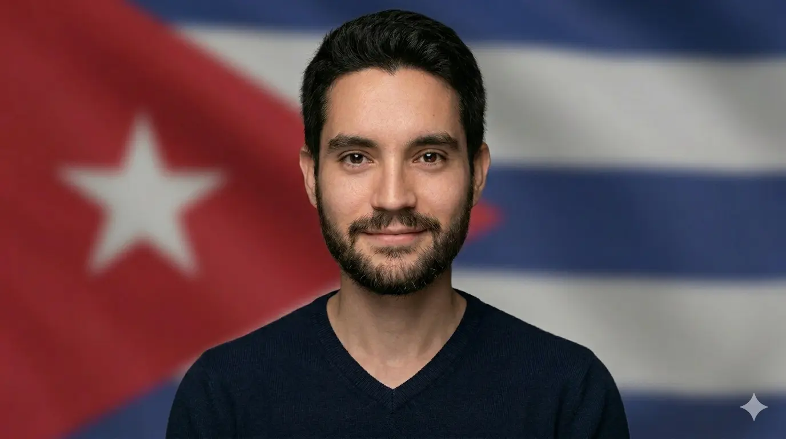
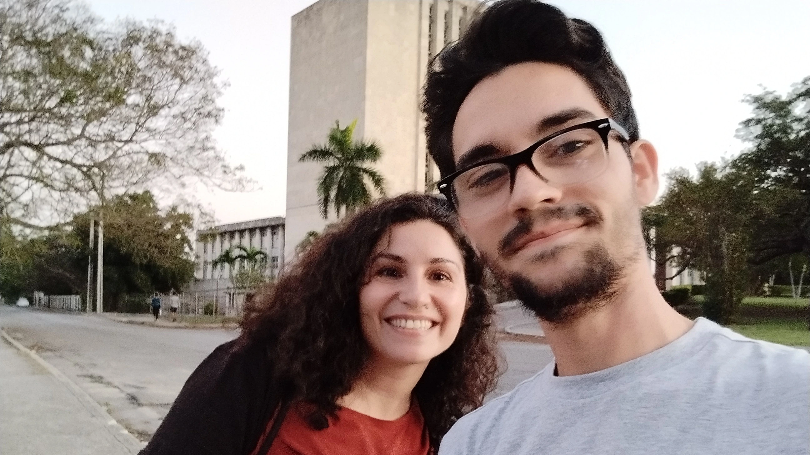
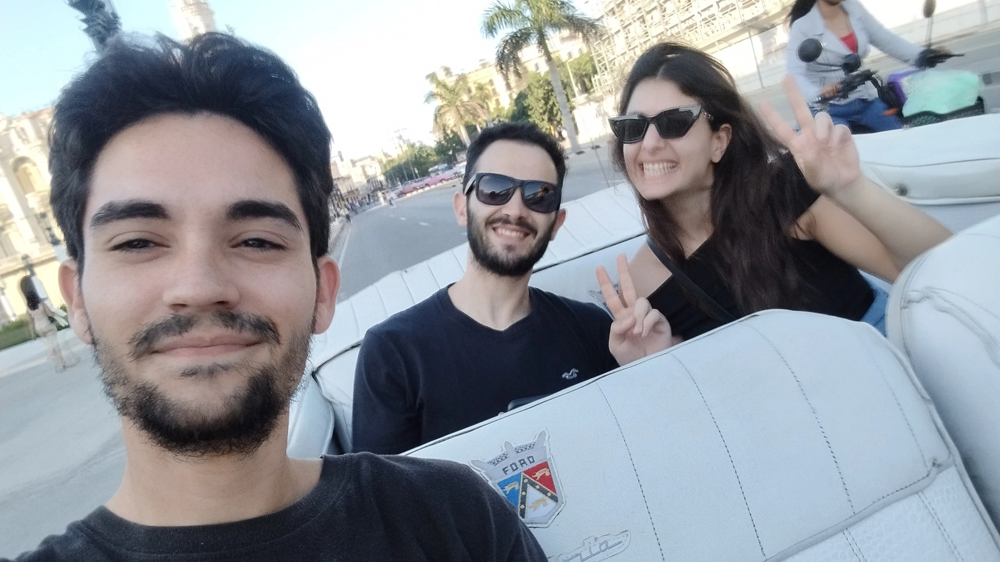
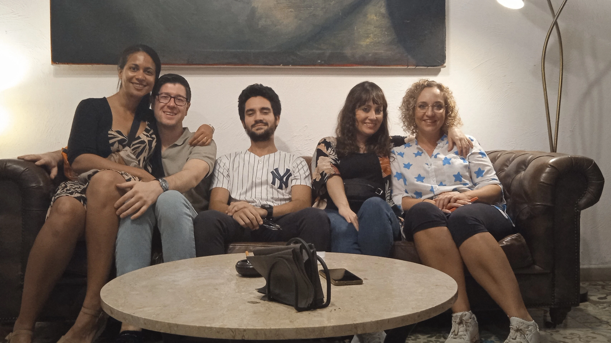
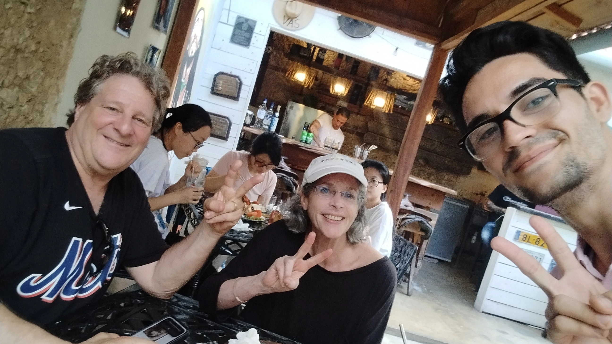
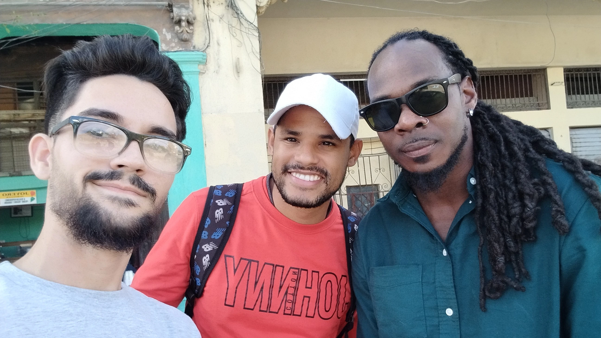

3
Idiomas con fluidez total

Guía Turístico · Fundador · Emprendedor
Cubano resiliente, narrador de experiencias y creador de negocios. De la ingeniería nuclear al turismo internacional — tres idiomas, un solo propósito: conectar.
Este sitio funciona como el Curriculum Vitae online de Eliezer Prieto, una hoja de vida profesional pensada para mostrar experiencia, educación, habilidades, proyectos y formas de contacto desde GitHub Pages.
Aquí presento mi CV online y mi perfil profesional de forma clara, actualizada y accesible en español, inglés y portugués, para mostrar mi experiencia, mi formación y el valor real que puedo aportar.
01 — About
Soy Eliezer Antonio Prieto Pantoja, un profesional cubano cuya historia está hecha de ciencia, fe y resiliencia. Me gradué del IPVCE Vladimir Ilich Lenin, una de las instituciones más exigentes de Cuba, y desde ahí estudié Ingeniería Nuclear y un año en el Instituto Eclesiástico Padre Félix Varela.
La búsqueda de libertad me llevó a nuevos horizontes, donde descubrí mi verdadera vocación: crear experiencias que conecten personas con lugares y culturas. Hoy combino mi formación científica con mi pasión por el mundo para guiar, emprender y construir.
Trilingüe, adaptable y con un historial que va de la física nuclear al turismo internacional, traigo una perspectiva única a todo lo que hago.
02 — Experience
Tours destacados








03 — Skills
04 — Education
05 — FAQ SEO
En esta web puedes encontrar el curriculum vitae online, la hoja de vida digital y el perfil profesional actualizado de Eliezer Prieto, con experiencia, educación, habilidades y contacto.
Incluye experiencia profesional en turismo y emprendimiento, formación técnica y humanística, idiomas, proyectos y enlaces directos para contacto profesional.
El perfil profesional online de Eliezer Prieto está publicado en GitHub Pages, con una versión optimizada para SEO y accesible desde cualquier dispositivo.
06 — Contact
Eliezer Antonio Prieto Pantoja. Actualmente en Boa Vista, Roraima, Brasil, con disponibilidad laboral inmediata a contrato para oportunidades en turismo, operaciones, proyectos técnicos y atención al cliente de alto nivel.
"Listo para aportar experiencia, criterio y liderazgo desde el primer día."